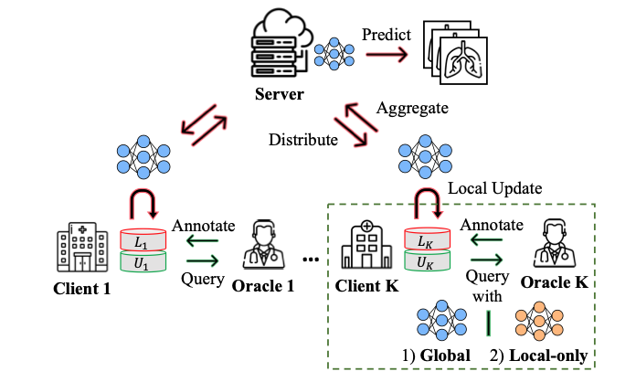

|
Sangmin Bae
Graduate School of AI, KAIST Email: bsmn0223xkxkxk@kaist.ac.kr / bsmn0223xkxkxk@gmail.com Linkedin, Twitter, Github |
Jun. 2023: 🚀 Two poster sessions at CVPR 2023 in Vancouver.
May 2023: 🎊 A Paper on 'Respiratory Sound Classification' accepted at INTERSPEECH 2023.
Feb. 2023: 🎊 Two Papers on 'Self-Supervised Learning' and 'Federated Active Learning' accepted at CVPR 2023.
Fed. 2023: 🚀 Oral presentation at AAAI 2023 in Washington, DC.
Education
Publications Google Scholar The asterisk* and underline indicate the 1st co-author and corresponding author, respectively.

|
S. Bae*, J. Ko*, H. Song, S-Y. Yun. Fast and Robust Early-Exiting Framework for Autoregressive Language Models with Synchronized Parallel Decoding. Preprint 2023. |

|
S. Bae*, J. Kim*, W. Cho, H. Baek, S. Son, B. Lee, C. Ha, K. Tae, S. Kim, S-Y. Yun. Patch-Mix Contrastive Learning with Audio Spectrogram Transformer on Respiratory Sound Classification. Conference of the International Speech Communication Association (INTERSPEECH) 2023. [pdf] [code] |
| S. Kim*, S. Bae*, S-Y. Yun. Coreset Sampling from Open-Set for Fine-Grained Self-Supervised Learning. International Conference on Computer Vision and Pattern Recognition (CVPR) 2023. [pdf] [code] | |
|  | S. Kim*, S. Bae*, H. Song, S-Y. Yun. Re-thinking Federated Active Learning based on Inter-class Diversity. International Conference on Computer Vision and Pattern Recognition (CVPR) 2023. [pdf] [code] |
| S. Bae*, S. Kim*, J. Ko, G. Lee, S. Noh, S-Y. Yun. Self-Contrastive Learning: Single-viewed Supervised Contrastive Framework using Sub-network. The Association for the Advancement of Artificial Intelligence (AAAI) 2023. Oral Presentation. [pdf] [code] |
| G. Lee*, M. Jeong*, Y. Shin, S. Bae, S-Y. Yun. Preservation of Global Knowledge by Not-True Distillation in Federated Learning. Neural Information Processing Systems (NeurIPS) 2022. [pdf] [code] | |

|
S. Kim*, S. Bae*, S-Y. Yun. Coreset Sampling from Open-Set for Fine-Grained Self-Supervised Learning. Neural Information Processing Systems SSLTheoryPractice Workshop (NeurIPSW) 2022. [pdf] |

|
S. Kim*, S. Bae*, H. Song, S-Y. Yun. LG-FAL: Federated Active Learning Strategy using Local and Global Models. International Conference on Machine Learning ReALML Workshop (ICMLW) 2022. [pdf] |

|
S. Kim*, G. Lee*, S. Bae*, S-Y. Yun. MixCo: Mix-up Contrastive Learning for Visual Representation. Neural Information Processing Systems SSLTheoryPractice Workshop (NeurIPSW) 2020. [pdf] [code] |
| T. Kim*, S. Bae*, J. Lee, S-Y. Yun. Accurate and Fast Federated Learning via Combinatorial Multi-Armed Bandits. Preprint 2020. [pdf] | |

|
G. Lee*, S. Bae*, J. Oh, S-Y. Yun. SIPA: A Simple Framework for Efficient Networks. IEEE International Conference on Data Mining Workshop (ICDMW) 2020. [pdf] [code] |
Projects
Services
Awards
Patents
© 2023 Sangmin Bae Thanks Dr. Hwanjun Song for the template.